Algorithmic Trading with MATLAB®: Evolutionary Learning
In AlgoTradingDemo2.m we saw how to add two signals together to get improved results. In this demo we'll use evolutionary learning (genetic algorithm) to select our signals and the logic used to build the trading strategy.
Copyright 2010, The MathWorks, Inc. All rights reserved.
Contents
Load in the data
Again, we'll import Bund data sampled minutely
load bund1min testPts = floor(0.8*length(data(:,4))); step = 30; % 30 minute interval BundClose = data(1:step:testPts,4); BundCloseV = data(testPts+1:step:end,4); annualScaling = sqrt(250*60*11/step); cost = 0.01; addpath('gaFiles')
Replicate the MA+RSI approach using evolutionary learning
First gather the indicator signals for the training set
N = 2; M = 396; thresh = 55; P = 2; Q = 110;
sma = leadlag(BundClose,N,M,annualScaling,cost);
srs = rsi(BundClose,[P,Q],thresh,annualScaling,cost);
marsi(BundClose,N,M,[P,Q],thresh,annualScaling,cost)
signals = [sma srs];
names = {'MA','RSI'};
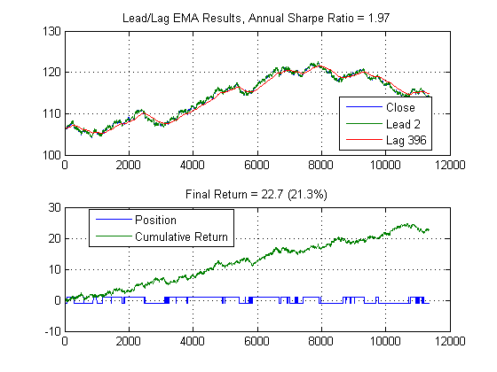 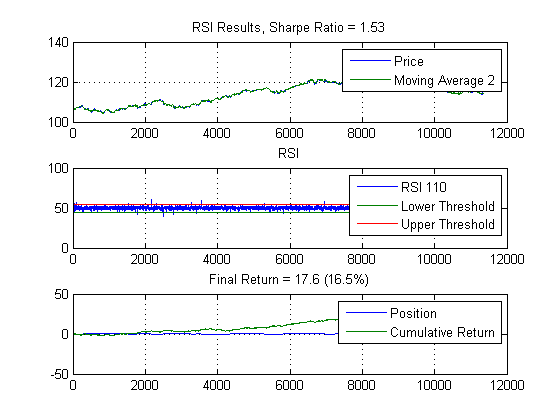 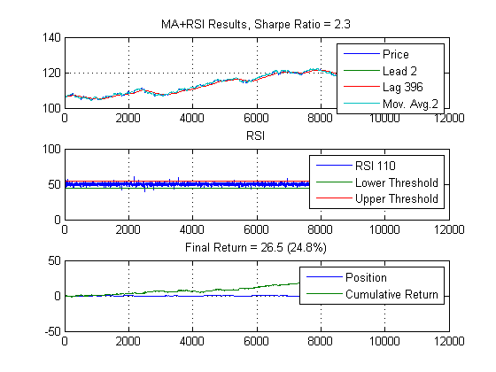 Trading signals
Plot the "state" of the market represented by the signals
figure ax(1) = subplot(2,1,1); plot(BundClose); ax(2) = subplot(2,1,2); imagesc(signals') cmap = colormap([1 0 0; 0 0 1; 0 1 0]); set(gca,'YTick',1:length(names),'YTickLabel',names); linkaxes(ax,'x');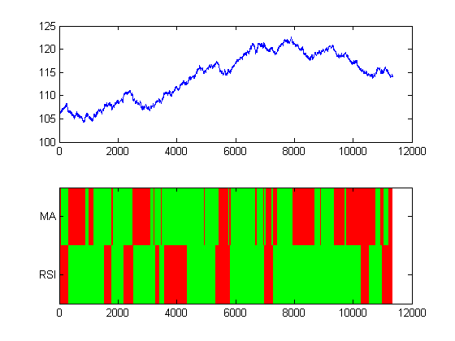
Generate initial population
Generate initial population of signals we'll use to seed the search space.
close all I = size(signals,2); pop = initializePopulation(I); imagesc(pop) xlabel('Bit Position'); ylabel('Individual in Population') colormap([1 0 0; 0 1 0]); set(gca,'XTick',1:size(pop,2))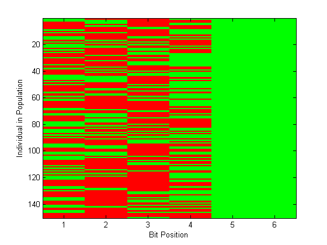
Fitness Function
Objective is to find a target bitstring (minimum value of -Sharpe Ratio)
type fitness
function f = fitness(pop,indicator,price,scaling,cost)
% See also tradeSignal, initializePopulation
%%
% Copyright 2010, The MathWorks, Inc.
% All rights reserved.
%% Generate Trading Signal from Population
s = tradeSignal(pop,indicator);
s = (s*2-1); % scale to +/-1 range
col = size(s,2);
%% PNL Caclulation
r = [zeros(1,col);
s(1:end-1,:).*repmat(diff(price),1,col)-abs(diff(s))*cost/2];
f = -scaling*sharpe(r,0);
Objective function definition as a function handle (the optimization sovlers need a function as an input, this is how to define them)
obj = @(pop) fitness(pop,signals,BundClose,annualScaling,cost)
obj =
@(pop)fitness(pop,signals,BundClose,annualScaling,cost)
Evaluate objective for initial population
obj(pop)
ans =
Columns 1 through 7
-2.3106 -1.9583 0.6715 -1.5312 0.6575 0.6715 0.6776
Columns 8 through 14
0.6776 -2.3106 0.6575 1.9040 0.6575 0.6654 -1.2089
Columns 15 through 21
-1.9583 -2.3106 0.6715 -1.9583 0.6715 -1.9583 1.9040
Columns 22 through 28
-1.9583 -1.5312 -1.9583 0.6654 -1.9583 -1.5312 -1.5312
Columns 29 through 35
0.6575 -1.2089 0.6575 -1.5312 -1.5312 -1.5312 -1.2089
Columns 36 through 42
0.6575 0.6715 0.6575 -1.5312 0.6776 -1.5312 -1.5312
Columns 43 through 49
-1.2089 1.9040 -1.9583 1.9040 0.6715 1.9040 0.6575
Columns 50 through 56
-1.2089 0.6575 -1.5312 0.6715 -1.5312 -1.5312 0.6575
Columns 57 through 63
-1.5312 -1.5312 -1.2089 0.6575 -1.9583 -1.2089 0.6575
Columns 64 through 70
0.6575 0.6575 0.6575 0.6654 -2.3106 -1.9583 0.6776
Columns 71 through 77
0.6654 1.9040 -1.9583 -1.5312 -1.5312 0.6715 0.6715
Columns 78 through 84
-1.9583 0.6575 -1.9583 -1.9583 0.6776 -1.5312 -2.3106
Columns 85 through 91
-1.9583 1.9040 0.6776 1.9040 -1.5312 -1.2089 0.6715
Columns 92 through 98
-1.5312 0.6776 -1.5312 0.6575 -1.9583 1.9040 -1.5312
Columns 99 through 105
0.6654 0.6654 1.9040 1.9040 0.6715 -1.9583 1.9040
Columns 106 through 112
0.6575 -1.5312 0.6654 0.6776 -1.5312 0.6575 0.6575
Columns 113 through 119
-2.3106 -1.5312 -1.9583 0.6654 1.9040 0.6575 1.9040
Columns 120 through 126
-2.3106 0.6575 0.6575 0.6575 0.6654 0.6654 0.6654
Columns 127 through 133
-2.3106 -1.9583 0.6715 -2.3106 -1.5312 -1.5312 0.6654
Columns 134 through 140
0.6575 -1.2089 -2.3106 -1.2089 0.6776 0.6575 0.6654
Columns 141 through 147
-1.2089 -1.9583 -1.5312 0.6776 0.6575 -1.2089 0.6654
Columns 148 through 150
0.6654 0.6654 0.6776
Solve With Genetic Algorithm
Find best trading rule and maximum Sharpe ratio (min -Sharpe ratio)
options = gaoptimset('Display','iter','PopulationType','bitstring',... 'PopulationSize',size(pop,1),... 'InitialPopulation',pop,... 'CrossoverFcn', @crossover,... 'MutationFcn', @mutation,... 'PlotFcns', @plotRules,... 'Vectorized','on'); [best,minSh] = ga(obj,size(pop,2),[],[],[],[],[],[],[],options)
Best Mean Stall
Generation f-count f(x) f(x) Generations
1 300 -2.311 -0.7954 0
2 450 -2.311 -1.049 1
3 600 -2.311 -1.342 2
4 750 -2.311 -1.736 3
5 900 -2.311 -1.898 4
6 1050 -2.311 -1.988 5
7 1200 -2.311 -2.068 6
8 1350 -2.311 -2.157 7
9 1500 -2.311 -2.124 8
10 1650 -2.311 -2.155 9
11 1800 -2.311 -2.167 10
12 1950 -2.311 -2.155 11
13 2100 -2.311 -2.223 12
14 2250 -2.311 -2.231 13
15 2400 -2.311 -2.277 14
16 2550 -2.311 -2.222 15
17 2700 -2.311 -2.211 16
18 2850 -2.311 -2.25 17
19 3000 -2.311 -2.268 18
20 3150 -2.311 -2.16 19
21 3300 -2.311 -2.215 20
22 3450 -2.311 -2.243 21
23 3600 -2.311 -2.228 22
24 3750 -2.311 -2.241 23
25 3900 -2.311 -2.241 24
26 4050 -2.311 -2.233 25
27 4200 -2.311 -2.214 26
28 4350 -2.311 -2.227 27
29 4500 -2.311 -2.227 28
30 4650 -2.311 -2.264 29
Best Mean Stall
Generation f-count f(x) f(x) Generations
31 4800 -2.311 -2.224 30
32 4950 -2.311 -2.251 31
33 5100 -2.311 -2.228 32
34 5250 -2.311 -2.244 33
35 5400 -2.311 -2.203 34
36 5550 -2.311 -2.223 35
37 5700 -2.311 -2.197 36
38 5850 -2.311 -2.093 37
39 6000 -2.311 -2.105 38
40 6150 -2.311 -2.137 39
41 6300 -2.311 -2.214 40
42 6450 -2.311 -2.172 41
43 6600 -2.311 -2.203 42
44 6750 -2.311 -2.251 43
45 6900 -2.311 -2.251 44
46 7050 -2.311 -2.111 45
47 7200 -2.311 -2.091 46
48 7350 -2.311 -2.072 47
49 7500 -2.311 -2.188 48
50 7650 -2.311 -2.216 49
51 7800 -2.311 -2.215 50
Optimization terminated: average change in the fitness value less than options.TolFun.
best =
1 0 0 1 1 1
minSh =
-2.3106
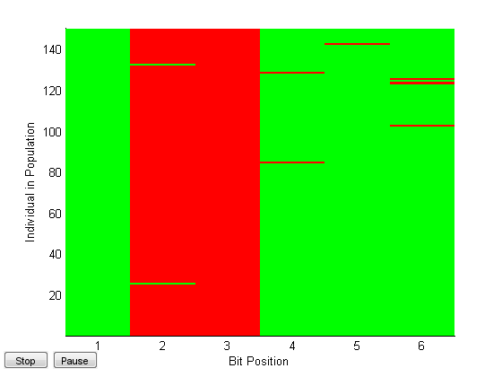 Evaluate Best Performer
s = tradeSignal(best,signals); s = (s*2-1); % scale to +/-1 r = [0; s(1:end-1).*diff(BundClose)-abs(diff(s))*cost/2]; sh = annualScaling*sharpe(r,0); % Plot results figure ax(1) = subplot(2,1,1); plot(BundClose) title(['Evolutionary Learning Resutls, Sharpe Ratio = ',num2str(sh,3)]) ax(2) = subplot(2,1,2); plot([s,cumsum(r)]) legend('Position','Cumulative Return') title(['Final Return = ',num2str(sum(r),3), ... ' (',num2str(sum(r)/BundClose(1)*100,3),'%)']) linkaxes(ax,'x');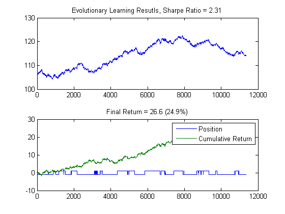
Note that this results is the same as found in (AlgoTradingDemo2.m). This validates the evolutionary approach can be used to select a trading strategy. We'll now add another signal to the mix and see if this appraoch will find a better solution. But first, we'll rerun the validation set to make sure we're consistent with the earlier result.
Check validation set
sma = leadlag(BundCloseV,N,M,annualScaling,cost); srs = rsi(BundCloseV,[P Q],thresh,annualScaling,cost); marsi(BundCloseV,N,M,[P Q],thresh,annualScaling,cost) signals = [sma srs]; s = tradeSignal(best,signals); s = (s*2-1); % scale to +/-1 r = [0; s(1:end-1).*diff(BundCloseV)-abs(diff(s))*cost/2]; sh = annualScaling*sharpe(r,0); % Plot results figure ax(1) = subplot(2,1,1); plot(BundCloseV) title(['Evolutionary Learning Resutls, Sharpe Ratio = ',num2str(sh,3)]) ax(2) = subplot(2,1,2); plot([s,cumsum(r)]) legend('Position','Cumulative Return') title(['Final Return = ',num2str(sum(r),3), ... ' (',num2str(sum(r)/BundCloseV(1)*100,3),'%)']) linkaxes(ax,'x');
 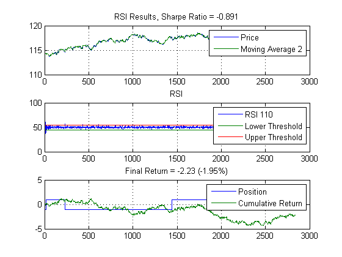 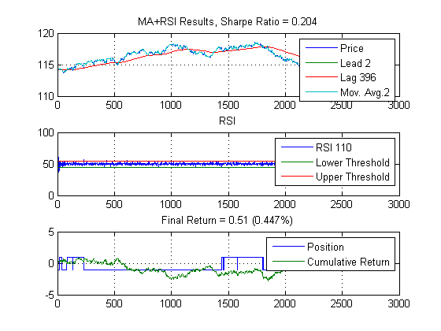 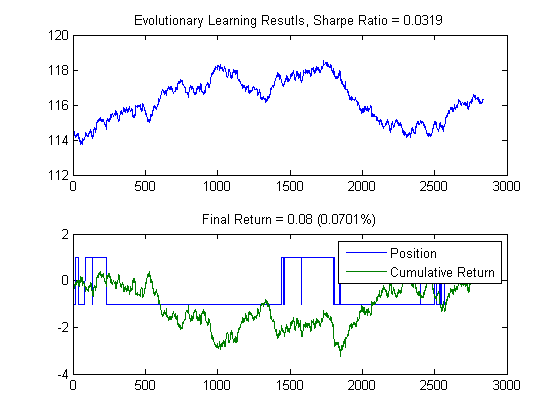
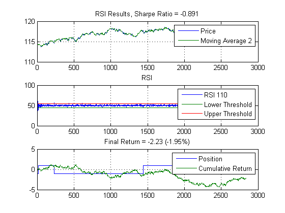 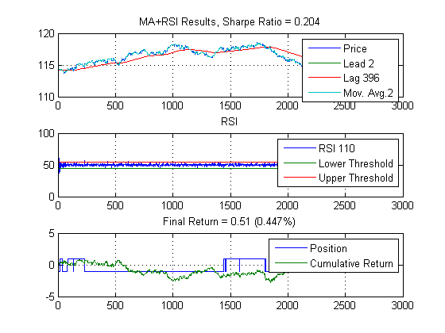 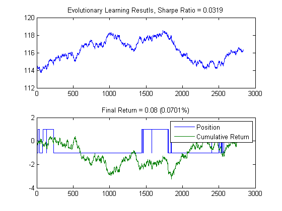 On to the next demo: AlgoTradingDemo4.m